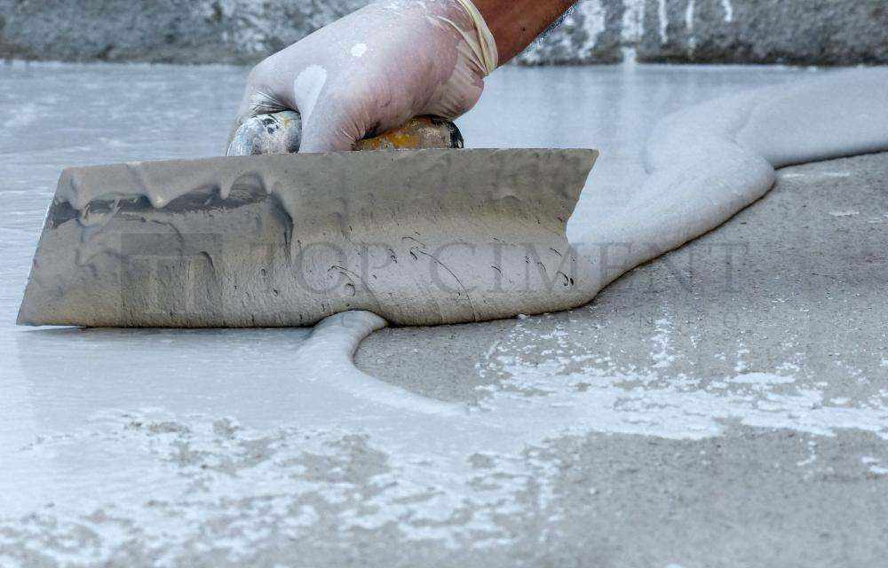
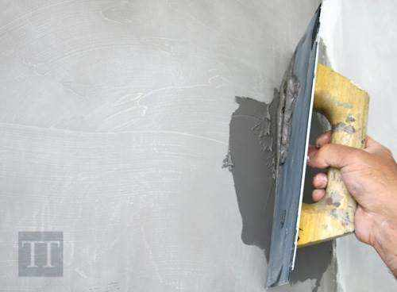
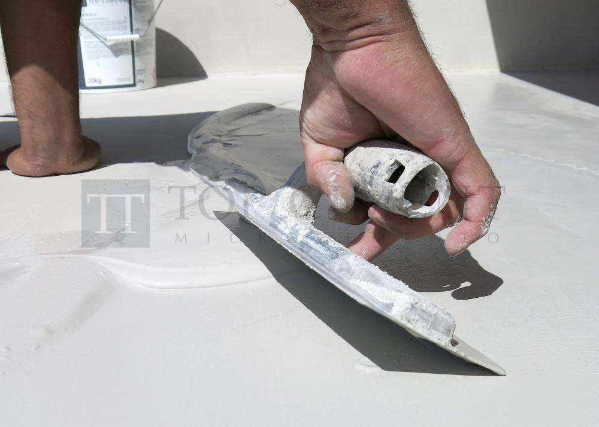
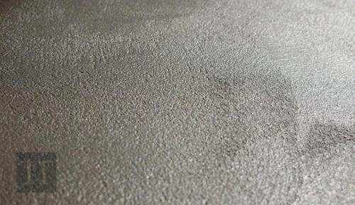

Application of Preparation Microcement and Finish Microcement
Micro-cement is a coating that is applied in several layers, and it is important to distinguish between the two types of material, according to their function: Preparation Micro-cement e.g. the first one used to condition the support, and Finish Micro-cement which will give the final appearance. Within the range of finishing Micro-cements there are different textures: Microfino, Microdeck, Microstone and Aquaciment M or F. Each material has its own characteristics and tools for working it.
Preparation Micro-cement:
Application of Microbase or in swimming pools, AquacimentXL
The mixture should be applied in two coats by means of a steel trowel in maximum
layers of 1 mm. The mixing proportions of the Quick Guide must
always be respected.
Between coats, allow a drying time of 24 hours. Sand each coat with a 40-grit
sandpaper to remove irregularities. Waiting too long will make the work more costly.
If an irregular surface is left, it will complicate the application of the next
coat, leaving marks on the surface.
Allow to dry for 24 hours before applying the finishing microcement.

Finish Micro-cement:
Microfino Application
Microfino is applied over Microbase in one or two coats, with a
rubber trowel or flexible steel one, according to the desired decorative
effect.
The mixing proportions of the Quick Guide must always be
respected.
Between coats, allow a drying time of 3 hours. Sand by hand, or with a rotary-orbital sanding machine, with sandpaper from 120 to 220. If sanding is done on the same day as the fine Micro-cement application, the mortar will still be fresh, and 220 grit sandpaper may be used. The coating will be harder the following day, and sanding with grit sandpaper 120 is advisable. Do not exceed a coating thickness of 0.3 mm when applying the Microfino.

Microdeck Application
Apply Microdeck over Microbase in two coats, with flexible steel trowel. The mixing proportions of the Quick Guide must always be respected.
Wait for 3 hours before applying the second coat, to ensure the drying out of the previous one and lightly sand first. Sand by hand, or with a rotary-orbital sander, with 80 grit sandpaper. Do not exceed an application thickness of 0.5mm per layer when applying Microdeck. A total final thickness of 2 to 3mm is recommended.

Microstone Application
Apply Microstone on Microbase in two coats with a flexible steel trowel. For this
type of application preparation of the support or substrate with one coat of
Microbase will suffice. The mixing proportions of the Quick
Guide must always be respected. Use of 40 grit sandpaper will
eliminate irregularities.
Do not exceed an application thickness per layer of 1mm when applying
Microstone. A total final thickness of 2 to 3mm is recommended

Aquaciment M or F Application
Aquaciment M or F should be applied over AquacimentXL in two coats, with a flexible steel trowel. The mixing proportions of the Quick Guide must always be respected. Use of 80 grit sandpaper will eliminate irregularities.
Do not exceed an application thickness per layer of 1mm when applying Aquaciment. A total final thickness of 2 to 3mm is recommended.